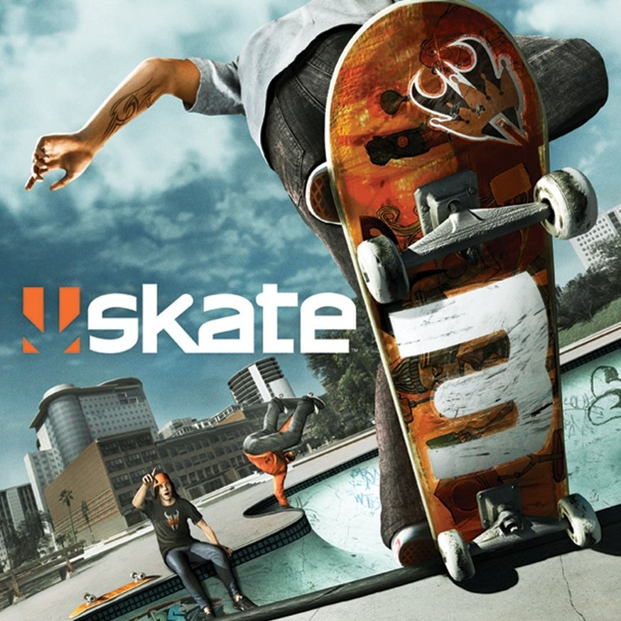

Skate 3

Contexto
Skate 3 é um jogo de skate desenvolvido pela EA Black Box e publicado pela Electronic Arts em 2010. O jogo acompanha o protagonista que já virou uma super estrela do skate duas vezes, e agora quer começar uma companhia de pranchas de skate.
História

Skate 3 tem uma história bem simples: você quer começar uma companhia de pranchas de skate com seu parceiro Reda. O jogo se baseia em você fazer a sua companhia ser famosa. Como você faz isso? Fazendo manobras de skate. Mas quem liga para a história desse jogo?
Manobras sinistras

Fazer uma manobra de skate é bem simples, você faz um gesto com o analógico direito que remete vagamente a como se faz a manobra na vida real. Por exemplo: Na vida real, um Ollie se resume em você jogar o skate para trás, pular e jogar o skate para frente; sem fazer o skate sair dos pés. No jogo, você inclina o analógico direito para trás e depois para frente. Também temos o Nollie, que na vida real você inclina para frente e joga para trás. No jogo você inclina o analógico para frente e depois para trás.
Apesar de eu ter um passado tentando andar de skate, e eu mal conseguir me manter em cima de uma prancha, eu não faço ideia de o que define cada manobra. Eu não faço ideia de como é possível alguém conseguir fazer um varial kickflip 180. Eu só sei que eu posso fazer um zig zag no controle e conseguir fazer uma manobra irada.
Óbvio que você não vai apenas fazer uma manobra e é isso. O ideal é você fazer uma streak de manobras para aumentar a sua pontuação. A variação das manobras também é recompensadora. Faça a mesma manobra várias vezes na sua streak e essa manobra irá dar menos pontos. Se você fizer bonito você também consegue um multiplicador de pontos maior.
O jogo também inclui diversos parques e lugares “skatáveis.” Praticamente todo o mapa foi feito para você conseguir andar de skate. Começa no topo do mapa; vai descendo a rua, fazendo manobras, seja um flip, grind, grab ou sei lá o que; No final você provavelmente vai chegar em algum parque irado para continuar fazendo o que quer que você queira fazer com o skate.
Você também sempre vai estar acompanhado por outros skatistas: Bots que andam por aí caindo com uma certa facilidade. Eu não sou muito da cultura do skate, não faço ideia do quanto se respeitam nessa comunidade, mas você pode empurrar seus colegas skatistas. Você pode empurrar qualquer NPC na verdade. Faça isso com frequência e eles vão revidar. E você achando que foi Baldur’s Gate 3 que inventou o shove…
Comentar brevemente também que você pode criar seus próprios parques com o skate.Park. Você também pode colocar objetos dentro do mapa do jogo para deixar o espaço do jeito que você quiser. Eu não explorei muito então não consigo comentar muito sobre.
Atividades

Modo livre é legal, mas aqui é onde você vai passar boa parte do tempo. Cada atividade é um conteúdo secundário que compõe boa parte do jogo principal, pois são sua principal fonte de venda de pranchas de skate. Todas as atividades tem duas formas de terminar: “Owning it” e “Killing it.” Para um desafio ser Owned, você precisa fazer um conjunto de desafios simples. Enquanto para um desafio ser Killed você faz um conjunto de desafios mais difíceis. Esses desafios se resumem em fazer manobras específicas em lugares específicos. As minhas atividades favoritas são: Own The Lot, Jams e o lendário Hall of Meat.
Own the Lot são um conjunto de coisas que você tem que fazer em um mesmo lugar. Enquanto temos outras atividades que fazem a mesma coisa, o Own the Lot brilha para mim justamente pela quantidade de coisas que você pode fazer no mesmo lugar, normalmente um parque. Ele dá mais ideias de o que você consegue fazer nesse jogo. Temos um Own the Lot dentro de uma piscina e eu nunca ia pensar em tentar subir no telhado se não fosse esse desafio. Ele também te força a aprender a fazer as manobras mais difíceis. Se um Own the Lot não me forçasse a aprender a fazer um grab trick eu só iria ignorar isso.
Jams são campeonatos de manobras. Quem fizer mais pontos em um lugar ou com tipos de manobras específicas ganha. Isso te força a aprender a como emendar uma manobra irada em outra. Como você quer manter o seu multiplicador alto o tempo todo, você não quer perder a sua streak. Para não perder a streak, você tem que fazer manobras mais variadas. Você não tem apenas flips, você também tem grab tricks, grinds e outros. Aprenda a fazer eles para conseguir ganhar as jams.

Hall of Meat é de longe a coisa mais icônica do Skate 3. Você vai cair muito andando de skate, tanto no jogo quanto na vida real. Que tal você tornar o fato de cair e se machucar em um modo de jogo? Hall of Meat se baseia em você se machucar andando de skate. Começa no topo de um precipício e você precisa cair em um lugar específico, fazendo algo específico. O som e o raio-x dos ossos quebrando ajuda a tornar esse modo de jogo uma delícia de ficar brincando. Você mal anda de skate nesse modo, mas quem se importa?
Marcas

Eu não conheço 90% das marcas ou pessoas desse jogo, mas sei que praticamente todos são baseados em marcas ou pessoas reais. O jogo inteiro pode se classificar como uma propaganda. Mas eu gostaria de comentar em como você pode customizar seu skatista com roupas reais, de marcas reais. Também temos algumas revistas famosas de esporte ajudando a divulgar a sua companhia e outras marcas patrocinando eventos do jogo (patrocínio esse acontecendo dentro do mundo do jogo), como a T-Mobile e a Monster.
Conclusão
Skate 3 é o meu jogo de esporte favorito. Mesmo anos depois de terminar o jogo eu acabo voltando para fazer algumas manobras. Infelizmente o jogo está preso em consoles datados (acredito que você consegue jogar no XBOX Series usando retrocompatibilidade), então o acesso a essa maravilha é difícil. É o tipo de jogo que você joga com seus amigos no sofá, cada um passando o controle para ficar zoando. Eu não vou dizer que esse jogo é uma obra prima, mas com certeza é um clássico dessa geração.